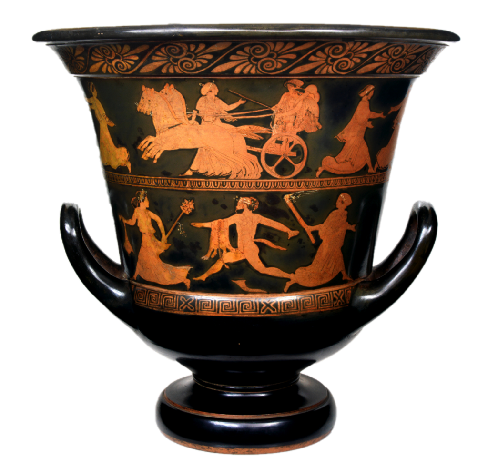

Ἑλλάς
um breve resumo
Grécia Antiga é a época da história grega que se estende do século XX ao século I a.C. Quando falamos em Grécia Antiga não estamos nos referindo a um país unificado e sim num conjunto de cidades independentes que compartilhavam a língua, costumes e algumas leis. Muitas delas foram até inimigas entre si como foi o caso de Atenas e Esparta. O período arcaico é caracterizado pela introdução de repúblicas em vez de monarquias (que, em Atenas, avançaram em direção à democracia) organizadas como uma cidade-estado ou pólis e a instituição de leis. Decorreu desde 800 a.C. até cerca de 500 a.C. Esse período incluiu o início dos Jogos Olímpicos e a redação da Odisseia e da Ilíada por Homero.